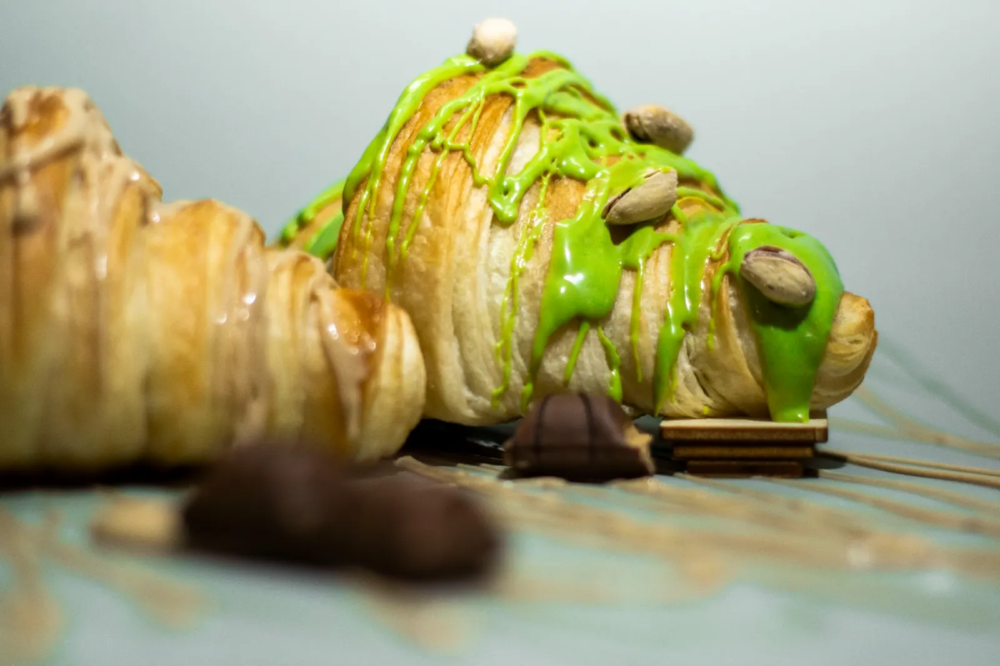
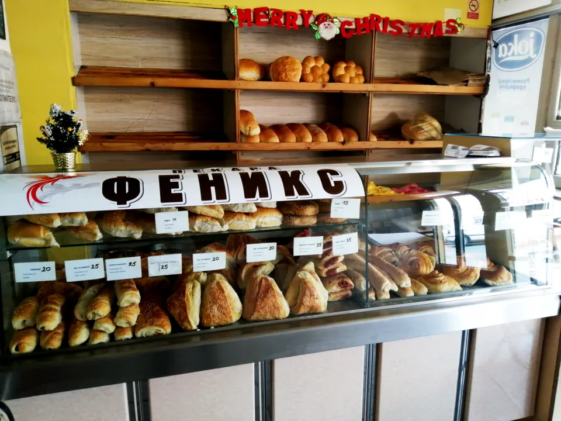
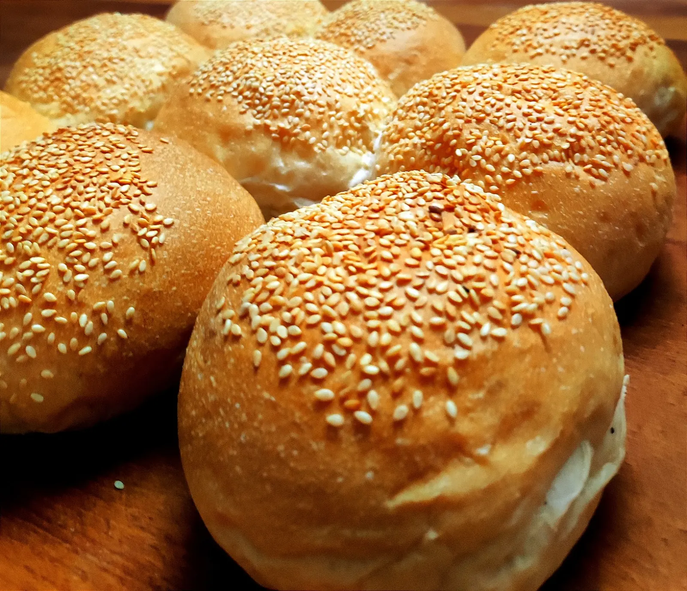
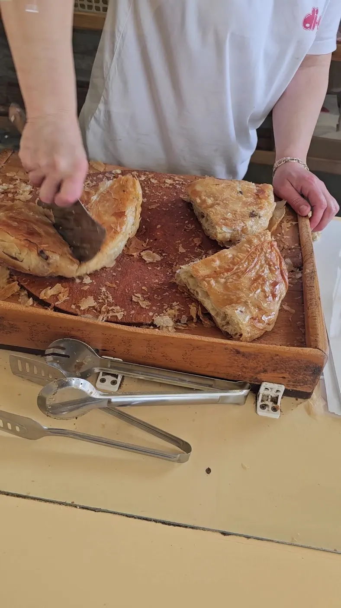
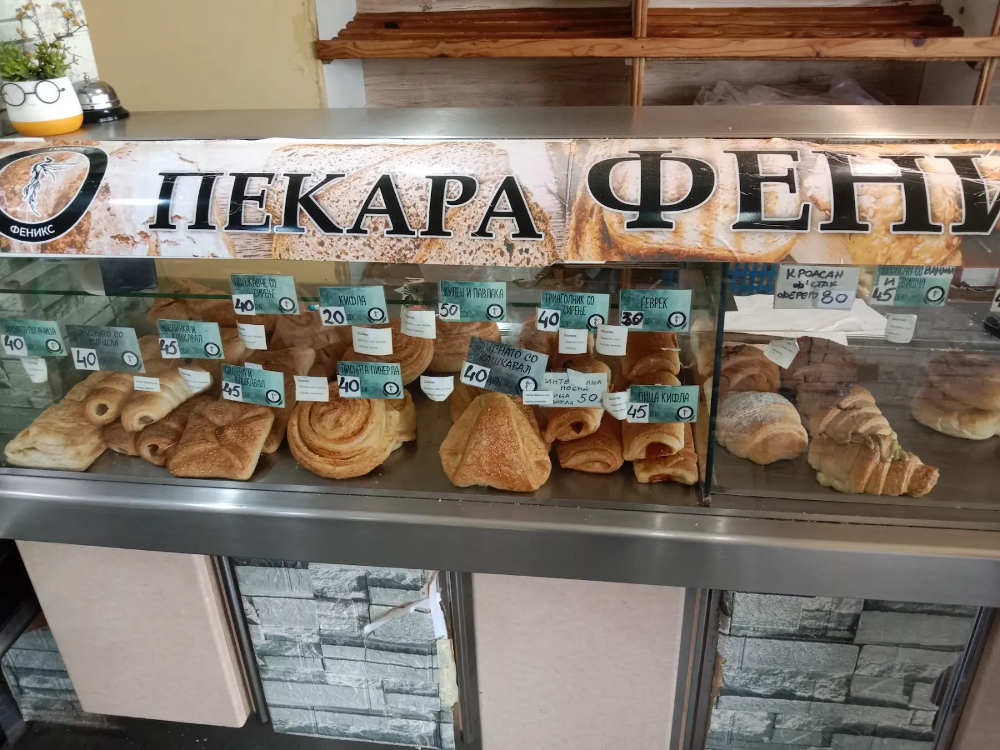
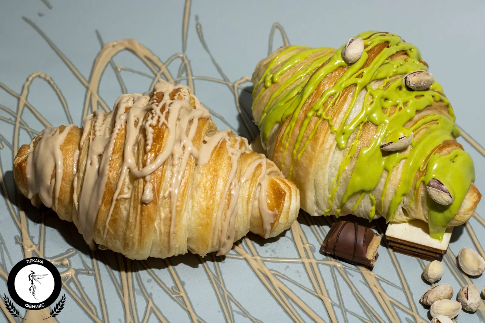
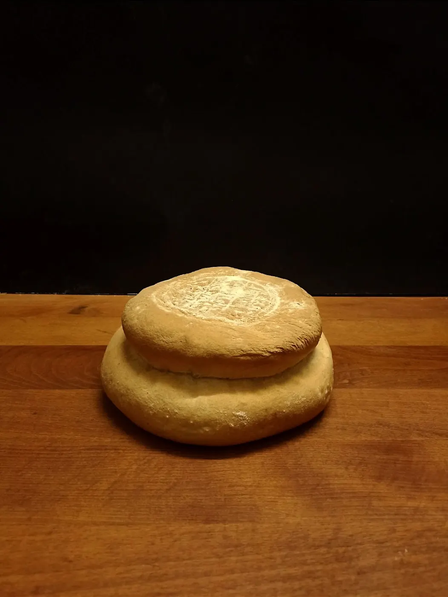
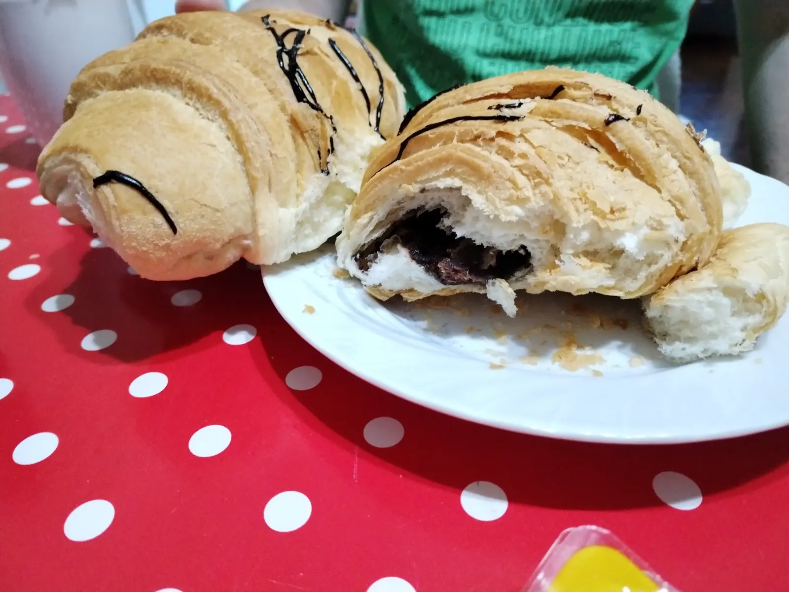

Pistachio croissant
Rich, fresh, the best in town.

Burek and fresh bread in Ohrid, day and night.
Bakery · Ohrid
A neighbourhood bakery on 7-mi Noemvri street, open around the clock most of the week. Burek with cheese or meat, sesame buns, and croissants filled with Ferrero or pistachio cream — with an owner known for his hospitality.
“Without a doubt, the best burek in Ohrid!”
From the oven

Rich, fresh, the best in town.

Straight from the oven.

Cut from the tray, with ajran.
The place



What guests say
“Without a doubt, the best burek in Ohrid! And the Ferrero and pistachio croissants are absolutely incredible.”Guest review
“The bread tastes delicious — and the owner even took me for a coffee and waited until I finished breakfast.”Guest review
“Fresh, rich and simply the best. Highly recommended!”Guest review
Visit us
